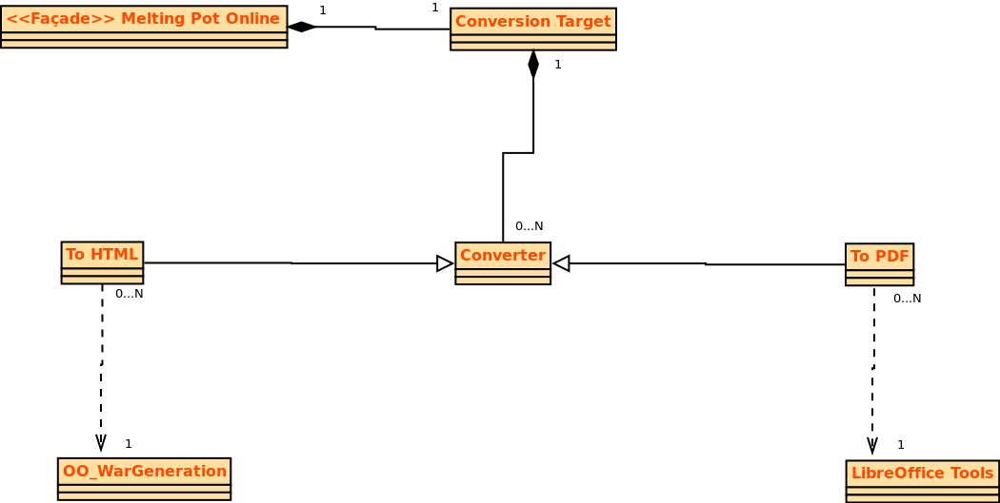
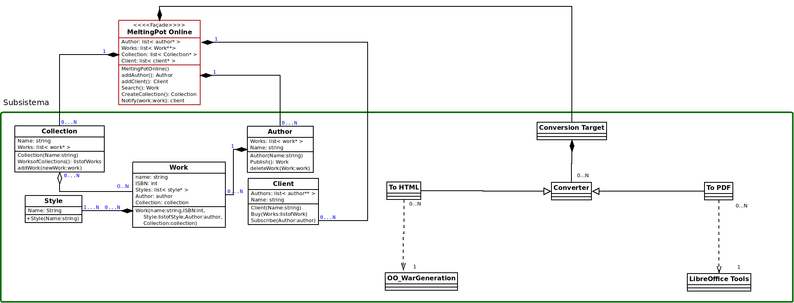

Enginyeria de Software Grup 14 - Seminari 6: Adapter Design Pattern
Seminari 1
Seminari 2
Seminari 3
Seminari 4
Seminari 5
Seminari 6
TASCA 1: Intentify how the Adapter design pattern can be used to call the different external modules

TASCA 2: Incorporate the pattern into the class diagram

Torna a dalt